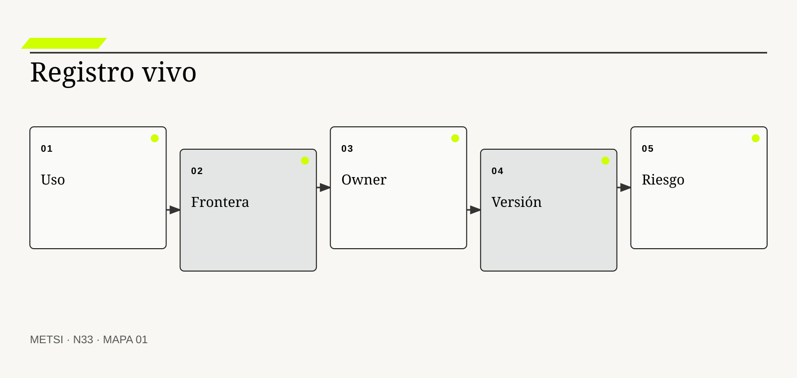
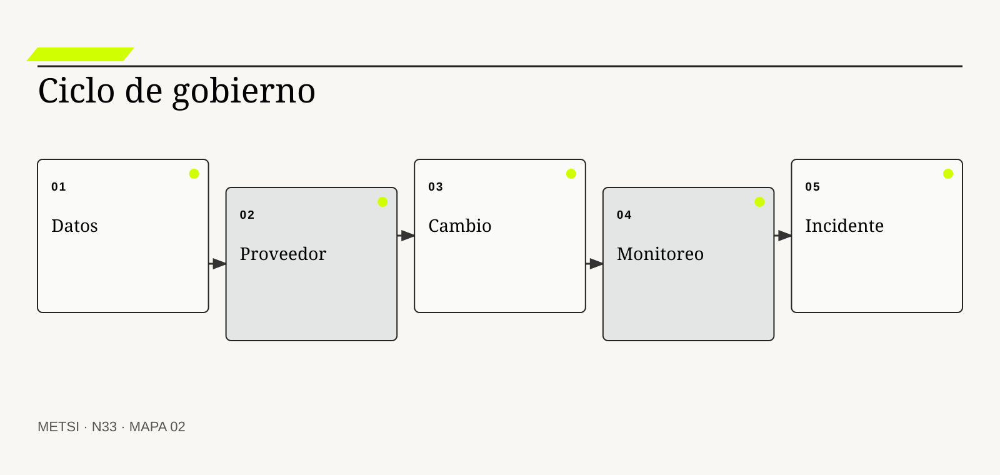
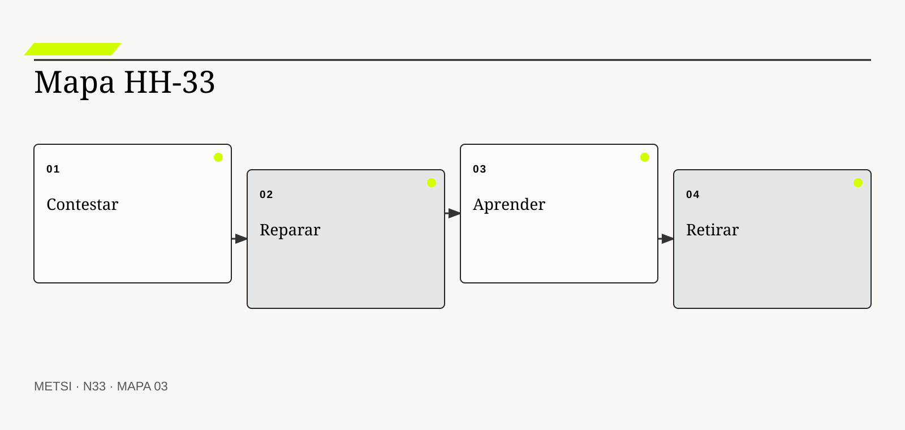

NIST
Organiza funciones continuas de gobierno, mapeo, medición y manejo.

N33 diseña gobierno vivo mediante inventario, ownership, datos, proveedores, cambios, monitoreo, incidentes, reparación y retiro.
Gobierno vivo de IA: inventario, ownership, datos, proveedores, cambios, incidentes, reparación y retiro
Ruta de lectura: problema, distinciones, decisiones, prueba, transferencia y preparación.
Nota. SIN NUM. identifica aparatos de orientación y referencia.
Seis voces para ampliar, contrastar y discutir N33.
Organiza funciones continuas de gobierno, mapeo, medición y manejo.
Define requisitos de un sistema de gestión de inteligencia artificial.
Establece obligaciones diferenciadas por rol y riesgo en la cadena de valor.
Propone auditoría interna con documentación y accountability.

Desarrollaron model cards para transparencia situada.

Desarrollaron datasheets para documentar conjuntos de datos.
N33 no resume estas fuentes ni las convierte en receta. Las pone en tensión para construir juicio profesional.
¿Cómo gobernar sistemas de inteligencia artificial que cambian durante su uso y dependen de datos, modelos y proveedores distribuidos?

N33 diseña gobierno vivo mediante inventario, ownership, datos, proveedores, cambios, monitoreo, incidentes, reparación y retiro.
Hotel Horizonte aprueba un asistente con alcance limitado. Dos meses después, el proveedor cambia el modelo base, Comercial agrega una fuente y Operaciones amplía permisos. Ningún cambio parece mayor por separado, pero el sistema ahora responde y actúa de otra manera.
El acta de aprobación conserva la versión inicial. El inventario sólo lista el nombre comercial y el contrato. Cuando aparece un incidente, nadie puede reconstruir qué configuración, datos, herramientas y responsables estaban activos.
Gobernar IA es mantener una representación vigente del sistema sociotécnico y de sus dependencias. Requiere inventario, ownership, procedencia, control de cambios, monitoreo, incidentes, reparación y retiro.
La función de gobierno crea un registro vivo por uso y no sólo por proveedor. Vincula cada capacidad con población, fuentes, versión, permisos, evaluación, owner, incidentes y condición de salida.
La política deja de ser una declaración general. Se convierte en decisiones ejecutables y auditables a lo largo del ciclo de vida.
N33 cierra el Bloque G. Recibe de N31 la pertinencia y de N32 la evidencia de gobierno de evaluación, y las transforma en gobierno institucional capaz de sostener, limitar y retirar.
HH-33 registra el asistente como una composición de modelo, instrucciones, recuperación, herramientas, interfaz y trabajo humano. Cada cambio material activa evaluación proporcional. Incidentes preservan evidencia, informan a afectados, habilitan reparación y modifican controles. El retiro incluye datos, accesos, conocimiento y continuidad.
N33 diseña gobierno vivo mediante inventario, ownership, datos, proveedores, cambios, monitoreo, incidentes, reparación y retiro.
N32 deja evidencia y decisiones abiertas que N33 utiliza sin reabrir su contenido. N33 diseña gobierno vivo mediante inventario, ownership, datos, proveedores, cambios, monitoreo, incidentes, reparación y retiro.
N34 integrará el recorrido completo desde problema y evidencia hasta operación y gobierno. N33 cierra el gobierno de IA sin reconstruir todavía la cadena total de la materia.
NIST incorpora gobierno, medición y manejo del riesgo de inteligencia artificial. En N33, ese aporte pone a prueba decisiones concretas y no funciona como respaldo ornamental. Su alcance se conserva en N33: ninguna referencia sustituye la evidencia de gobierno del caso ni la función responsable necesaria para intervenir.
NIST aporta una fuente contrastable para definir alcance, evidencia y condiciones de revisión. En N33, ese aporte pone a prueba decisiones concretas y no funciona como respaldo ornamental. Su alcance se conserva en N33: ninguna referencia sustituye la evidencia de gobierno del caso ni la función responsable necesaria para intervenir.
ISO/IEC aporta una fuente contrastable para definir alcance, evidencia y condiciones de revisión. En N33, ese aporte pone a prueba decisiones concretas y no funciona como respaldo ornamental. Su alcance se conserva en N33: ninguna referencia sustituye la evidencia de gobierno del caso ni la función responsable necesaria para intervenir.
ISO/IEC incorpora gobierno, medición y manejo del riesgo de inteligencia artificial. En N33, ese aporte pone a prueba decisiones concretas y no funciona como respaldo ornamental. Su alcance se conserva en N33: ninguna referencia sustituye la evidencia de gobierno del caso ni la función responsable necesaria para intervenir.
European Union conecta uso de inteligencia artificial con riesgo, obligaciones y supervisión. En N33, ese aporte pone a prueba decisiones concretas y no funciona como respaldo ornamental. Su alcance se conserva en N33: ninguna referencia sustituye la evidencia de gobierno del caso ni la función responsable necesaria para intervenir.
European Commission aporta una fuente contrastable para definir alcance, evidencia y condiciones de revisión. En N33, ese aporte pone a prueba decisiones concretas y no funciona como respaldo ornamental. Su alcance se conserva en N33: ninguna referencia sustituye la evidencia de gobierno del caso ni la función responsable necesaria para intervenir.
Raji, I. D. et al. conectan auditoría con documentación, roles y procesos internos. En N33, ese aporte pone a prueba decisiones concretas y no funciona como respaldo ornamental. Su alcance se conserva en N33: ninguna referencia sustituye la evidencia de gobierno del caso ni la función responsable necesaria para intervenir.
Mitchell, M. et al. documenta desempeño, usos previstos y límites de modelos. En N33, ese aporte pone a prueba decisiones concretas y no funciona como respaldo ornamental. Su alcance se conserva en N33: ninguna referencia sustituye la evidencia de gobierno del caso ni la función responsable necesaria para intervenir.
Gebru, T. et al. documenta motivación, composición, recolección y uso de datos. En N33, ese aporte pone a prueba decisiones concretas y no funciona como respaldo ornamental. Su alcance se conserva en N33: ninguna referencia sustituye la evidencia de gobierno del caso ni la función responsable necesaria para intervenir.
OECD organiza elementos de accountability a lo largo del ciclo de vida. En N33, ese aporte pone a prueba decisiones concretas y no funciona como respaldo ornamental. Su alcance se conserva en N33: ninguna referencia sustituye la evidencia de gobierno del caso ni la función responsable necesaria para intervenir.
NIST muestra por qué la evaluación previa necesita observación repetida en despliegue. En N33, ese aporte pone a prueba decisiones concretas y no funciona como respaldo ornamental. Su alcance se conserva en N33: ninguna referencia sustituye la evidencia de gobierno del caso ni la función responsable necesaria para intervenir.
Crawford, K. aporta una fuente contrastable para definir alcance, evidencia y condiciones de revisión. En N33, ese aporte pone a prueba decisiones concretas y no funciona como respaldo ornamental. Su alcance se conserva en N33: ninguna referencia sustituye la evidencia de gobierno del caso ni la función responsable necesaria para intervenir.

El inventario registra usos, componentes, poblaciones y consecuencias con vigencia. La definición fija el objeto de decisión. Si el equipo de N33 no puede expresar qué compromiso organiza, la categoría funciona como etiqueta y no como instrumento.
No es una lista de licencias ni de modelos adquiridos. La distinción evita que una palabra familiar oculte otro mecanismo. En N33, confundirlos cambia qué se observa, qué se acepta como avance y quién debe intervenir.
En inventario de sistemas de ia, el recorrido causal debe mostrar qué condición habilita la acción, qué transformación ocurre y quién absorbe el resultado. Inventario de sistemas de IA se operacionaliza delimitando propósito, población, entradas, autoridad, acción, consecuencia y condición de revisión. El recorrido se contrasta con una alternativa más simple y con un escenario adverso antes de ampliar compromiso. Si un salto depende sólo de una explicación oral, la estrategia todavía no puede gobernarlo.
La evidencia relevante para inventario de sistemas de ia no se limita al resultado promedio. La evidencia integra una prueba previa, resultados desagregados y el episodio siguiente: Cada asistente se identifica por tarea, versión y permisos También conserva las decisiones humanas y automáticas que produjeron ese resultado. N33 busca además casos negativos, diferencias entre poblaciones y señales de que la explicación elegida podría ser insuficiente.
Ejemplo. Cada asistente se identifica por tarea, versión y permisos En N33, el episodio vuelve visible la relación entre ritmo, autoridad, evidencia y capacidad de reparación.
El tradeoff central de inventario de sistemas de ia aparece entre anticipar y preservar opciones. Anticipar puede reducir coordinación y también fijar una premisa prematura; preservar opciones puede producir aprendizaje y también demorar una protección necesaria. La elección debe declarar cuál de esos costos acepta, durante cuánto tiempo y para quién.
La revisión del registro vivo de inventario de sistemas de ia termina con una pregunta de uso: ¿qué podría decidir ahora una persona que antes no podía? En N33, la respuesta debe nombrar una acción, una restricción y una evidencia, no sólo una comprensión mejorada.
Operacionalizar inventario de sistemas de ia requiere asignar una unidad observable. La función de gobierno define qué episodio contará, desde qué momento, con qué población y bajo qué fuente. Después compara al menos un caso ordinario con otro que fuerce excepción. Esta precisión en N33 evita que una conclusión general se sostenga sólo en ejemplos convenientes.
La decisión profesional no termina en adoptar inventario de sistemas de ia. Se compara una ruta principal con una explicación rival, se explicita quién queda expuesto y se conserva un modo de revisar. Lo no inventariado no puede evaluarse, gobernarse ni retirarse con seguridad. El límite forma parte del diseño y no una nota posterior.
La frontera incluye modelo, datos, instrucciones, herramientas, interfaz, personas y proceso. Conviene comenzar por su función profesional. Si el equipo de N33 no puede expresar qué compromiso organiza, la categoría funciona como etiqueta y no como instrumento.
No coincide con la API del proveedor. El contraste importa porque conduce a pruebas distintas. En N33, confundirlos cambia qué se observa, qué se acepta como avance y quién debe intervenir.
El mecanismo de frontera del sistema no se presume por el nombre. Frontera del sistema se operacionaliza delimitando propósito, población, entradas, autoridad, acción, consecuencia y condición de revisión. El recorrido se contrasta con una alternativa más simple y con un escenario adverso antes de ampliar compromiso. Debe localizarse dónde comienza, qué relaciones activa, qué demora introduce y qué capacidad de reparación queda disponible cuando la expectativa no se cumple.
Una afirmación sobre frontera del sistema gana fuerza cuando puede reconstruirse desde fuentes independientes. La evidencia integra una prueba previa, resultados desagregados y el episodio siguiente: El registro abarca la decisión de Recepción y sus fuentes También conserva las decisiones humanas y automáticas que produjeron ese resultado. La ausencia de señal también se interpreta: puede significar estabilidad, mala observación o exclusión del caso que más importa.
Ejemplo. El registro abarca la decisión de Recepción y sus fuentes En N33, el episodio vuelve visible la relación entre ritmo, autoridad, evidencia y capacidad de reparación.
La escala modifica frontera del sistema. Una solución válida para un equipo puede fallar cuando atraviesa sedes, turnos o proveedores porque aumenta la distancia entre señal y autoridad. Antes de ampliar, N33 prueba si la misma decisión conserva significado y reparación bajo esa nueva distribución.
Para evitar consenso aparente, frontera del sistema se revisa con alguien afectado y con alguien responsable de reparar. Las dos perspectivas pueden valorar resultados diferentes y obligan a declarar la prioridad elegida.
En la práctica, frontera del sistema atraviesa más de un área. Se identifican handoffs, esperas, decisiones y datos que cada participante puede ver. Cuando dos áreas usan evidencia distinta en N33, el expediente conserva la divergencia hasta determinar si representa error, perspectiva legítima o una brecha que la estrategia debe resolver.
En una revisión, frontera del sistema debe responder tres preguntas: qué mejora, qué desplaza y qué vuelve más difícil de revertir. Una frontera estrecha desplaza responsabilidad fuera del análisis. Si esas respuestas cambian, también debe cambiar el compromiso, aunque el trabajo previo haya sido técnicamente correcto.
El ownership reúne autoridad y recursos para limitar, cambiar y reparar. El concepto adquiere valor cuando cambia un control de ciclo de vida. Si el equipo de N33 no puede expresar qué compromiso organiza, la categoría funciona como etiqueta y no como instrumento.
Accountability no es atribuir culpa después del daño. Su vecino conceptual puede parecer equivalente y no lo es. En N33, confundirlos cambia qué se observa, qué se acepta como avance y quién debe intervenir.
Comprender ownership y accountability exige seguir la decisión en el tiempo. Ownership y accountability se operacionaliza delimitando propósito, población, entradas, autoridad, acción, consecuencia y condición de revisión. El recorrido se contrasta con una alternativa más simple y con un escenario adverso antes de ampliar compromiso. El gobierno distingue condición, intervención, señal temprana y consecuencia para evitar atribuir a una práctica un efecto producido por otro cambio simultáneo.
La revisión de gobierno de ownership y accountability debe formularse antes de conocer el resultado. La evidencia integra una prueba previa, resultados desagregados y el episodio siguiente: Una responsable puede suspender ofertas automáticas También conserva las decisiones humanas y automáticas que produjeron ese resultado. Se registra qué observación sostendría continuar, cuál obligaría a adaptar y cuál activaría detención o escalamiento.
Ejemplo. Una responsable puede suspender ofertas automáticas En N33, el episodio vuelve visible la relación entre ritmo, autoridad, evidencia y capacidad de reparación.
El tiempo también altera ownership y accountability. Una evidencia suficiente para explorar puede ser insuficiente para operar de forma permanente. Por eso se separan prueba local, compromiso transitorio y condición estable, y cada estado conserva fecha, alcance y responsable de revisión.
El registro de ownership y accountability conserva una explicación rival. Si esa alternativa predice mejor el episodio siguiente, el equipo cambia de curso sin reescribir retrospectivamente lo que creía saber.
La gobernanza de ownership y accountability incluye quién puede proponer, aprobar, ejecutar, observar y reparar. Esas funciones no se presumen por cargo ni por permiso técnico. N33 las prueba en un escenario donde falta la persona habitual, porque una capacidad que sólo funciona con conocimiento privado todavía no pertenece a la organización.
El juicio sobre ownership y accountability incluye distribución de consecuencias. Responsabilidad sin capacidad real crea un fusible humano. Una mejora agregada no alcanza si concentra espera, riesgo o trabajo invisible en un grupo sin autoridad para discutir la decisión.
La clasificación vincula uso y consecuencia con obligaciones proporcionales. La definición fija el objeto de decisión. Si el equipo de N33 no puede expresar qué compromiso organiza, la categoría funciona como etiqueta y no como instrumento.
No se deriva sólo del tipo de modelo. La distinción evita que una palabra familiar oculte otro mecanismo. En N33, confundirlos cambia qué se observa, qué se acepta como avance y quién debe intervenir.
La explicación operacional de clasificación de riesgo conecta personas, reglas y tecnología. Clasificación de riesgo se operacionaliza delimitando propósito, población, entradas, autoridad, acción, consecuencia y condición de revisión. El recorrido se contrasta con una alternativa más simple y con un escenario adverso antes de ampliar compromiso. Esa conexión permite decidir qué parte puede modificarse localmente y cuál requiere coordinación con otras autoridades o capacidades.
Para auditar clasificación de riesgo, conviene combinar evidencia de diseño, ejecución y consecuencia. La evidencia integra una prueba previa, resultados desagregados y el episodio siguiente: Responder preguntas y modificar reservas reciben niveles distintos También conserva las decisiones humanas y automáticas que produjeron ese resultado. Ninguna fuente domina automáticamente; una especificación correcta puede convivir con una operación dañina.
Ejemplo. Responder preguntas y modificar reservas reciben niveles distintos En N33, el episodio vuelve visible la relación entre ritmo, autoridad, evidencia y capacidad de reparación.
Existe además una dimensión política en clasificación de riesgo. La opción más eficiente puede reducir la capacidad de una persona para cuestionar un control de ciclo de vida o trasladar trabajo sin reconocerlo. N33 registra esa distribución y no la esconde dentro de un indicador agregado.
Una prueba adversa de clasificación de riesgo introduce demora, ausencia de autoridad o dato incompleto. El objetivo de N33 no es cubrir todas las fallas, sino revelar si la estrategia mantiene una salida segura fuera del camino ordinario.
El indicador de clasificación de riesgo se elige después de formular la decisión. Puede combinar tiempo, calidad, distribución y costo de reparación. Una cifra aislada rara vez explica el mecanismo. En N33, la lectura conjunta de señales evita optimizar velocidad mientras aumenta retrabajo, exclusión o dependencia.
La condición de cierre de clasificación de riesgo no es perfección. La clase debe revisarse cuando cambia propósito, población o autonomía. Es evidencia suficiente para el uso previsto, riesgo residual aceptado por autoridad y una ruta clara cuando el supuesto deje de cumplirse.

La procedencia reconstruye origen, transformación, permiso, versión y uso. Conviene comenzar por su función profesional. Si el equipo de N33 no puede expresar qué compromiso organiza, la categoría funciona como etiqueta y no como instrumento.
No se satisface con nombrar una fuente o proveedor. El contraste importa porque conduce a pruebas distintas. En N33, confundirlos cambia qué se observa, qué se acepta como avance y quién debe intervenir.
Para que procedencia de datos y modelos sea algo más que una etiqueta, debe existir una cadena examinable. Procedencia de datos y modelos se operacionaliza delimitando propósito, población, entradas, autoridad, acción, consecuencia y condición de revisión. El recorrido se contrasta con una alternativa más simple y con un escenario adverso antes de ampliar compromiso. La cadena incluye supuestos, handoffs y efectos laterales que una descripción ideal suele omitir.
La función de gobierno no declara resuelto procedencia de datos y modelos por acuerdo retórico. La evidencia integra una prueba previa, resultados desagregados y el episodio siguiente: Cada fragmento recuperado conserva documento y vigencia También conserva las decisiones humanas y automáticas que produjeron ese resultado. Una persona ajena al diseño debe poder repetir la prueba y comprender por qué el resultado habilita un control de ciclo de vida concreta.
Ejemplo. Cada fragmento recuperado conserva documento y vigencia En N33, el episodio vuelve visible la relación entre ritmo, autoridad, evidencia y capacidad de reparación.
La mantenibilidad de procedencia de datos y modelos se prueba mediante cambio deliberado. Se modifica una regla, una fuente o una dependencia y se observa quién detecta el impacto, cuánto tarda en responder y qué información necesita. En N33, si la respuesta depende de memoria privada, la capacidad todavía es frágil.
El costo de procedencia de datos y modelos se observa tanto en presupuesto como en atención, espera, coordinación y dependencia. Lo que no figura en una factura puede seguir siendo el costo que define la viabilidad.
La transición asociada con procedencia de datos y modelos necesita un estado intermedio explícito. Durante ese período conviven reglas, versiones o capacidades diferentes. N33 declara cuál rige para cada población, cómo se comunica y qué contingencia protege a quien podría quedar entre ambos sistemas.
El gobierno de procedencia de datos y modelos evita dos extremos: conservar por inercia y cambiar por identidad metodológica. Procedencia conocida no demuestra calidad, licitud ni pertinencia. Entre ambos queda un control de ciclo de vida provisional con fecha, responsable y prueba de revisión.
El gobierno de proveedores asigna evidencia, avisos, acceso, auditoría y salida. El concepto adquiere valor cuando cambia un control de ciclo de vida. Si el equipo de N33 no puede expresar qué compromiso organiza, la categoría funciona como etiqueta y no como instrumento.
Comprar un servicio no terceriza la responsabilidad por su uso. Su vecino conceptual puede parecer equivalente y no lo es. En N33, confundirlos cambia qué se observa, qué se acepta como avance y quién debe intervenir.
El valor de gobierno de proveedores aparece al contrastar alternativas. Gobierno de proveedores se operacionaliza delimitando propósito, población, entradas, autoridad, acción, consecuencia y condición de revisión. El recorrido se contrasta con una alternativa más simple y con un escenario adverso antes de ampliar compromiso. Si dos opciones producen el mismo entregable inmediato, el mecanismo permite compararlas por aprendizaje, dependencia, riesgo residual y posibilidad de salida.
La suficiencia de evidencia para gobierno de proveedores depende del costo de equivocarse. La evidencia integra una prueba previa, resultados desagregados y el episodio siguiente: El contrato exige notificación de cambios materiales También conserva las decisiones humanas y automáticas que produjeron ese resultado. A mayor irreversibilidad o desigualdad de daño, mayor contraste, supervisión y autoridad se requieren.
Ejemplo. El contrato exige notificación de cambios materiales En N33, el episodio vuelve visible la relación entre ritmo, autoridad, evidencia y capacidad de reparación.
Finalmente, gobierno de proveedores debe convivir con otras decisiones. Optimizarla de manera aislada puede empeorar flujo, seguridad o comprensión. HH-33 N33 explicita dependencias y evita que una mejora local se presente como outcome completo del sistema.
La revisión de gobierno de proveedores fija fecha y desencadenante. Puede ocurrir por incidente, cambio normativo, nueva población o evidencia acumulada. Sin esa regla en N33, un control de ciclo de vida provisional se vuelve permanente por olvido.
El cierre de gobierno de proveedores debe sobrevivir a una revisión independiente. La evidencia, las decisiones y los límites se almacenan de manera que otra persona pueda cuestionarlos. En N33, la trazabilidad no busca eliminar desacuerdo; busca que el desacuerdo se concentre en supuestos examinables y no en recuerdos incompatibles.
El sistema de gestión debe poder explicar por qué gobierno de proveedores recibe cierta inversión y no otra. El poder contractual puede limitar controles y debe figurar como riesgo. Esa explicación conecta valor, costo, aprendizaje y reparación, y permanece abierta a evidencia nueva.
El control de cambios identifica modificaciones materiales y su evaluación necesaria. La definición fija el objeto de decisión. Si el equipo de N33 no puede expresar qué compromiso organiza, la categoría funciona como etiqueta y no como instrumento.
No todo cambio requiere el mismo proceso ni toda actualización es menor. La distinción evita que una palabra familiar oculte otro mecanismo. En N33, confundirlos cambia qué se observa, qué se acepta como avance y quién debe intervenir.
En control de cambios, el recorrido causal debe mostrar qué condición habilita la acción, qué transformación ocurre y quién absorbe el resultado. Control de cambios se operacionaliza delimitando propósito, población, entradas, autoridad, acción, consecuencia y condición de revisión. El recorrido se contrasta con una alternativa más simple y con un escenario adverso antes de ampliar compromiso. Si un salto depende sólo de una explicación oral, la estrategia todavía no puede gobernarlo.
La evidencia relevante para control de cambios no se limita al resultado promedio. La evidencia integra una prueba previa, resultados desagregados y el episodio siguiente: Una nueva herramienta dispara pruebas de permisos y consecuencias También conserva las decisiones humanas y automáticas que produjeron ese resultado. N33 busca además casos negativos, diferencias entre poblaciones y señales de que la explicación elegida podría ser insuficiente.
Ejemplo. Una nueva herramienta dispara pruebas de permisos y consecuencias En N33, el episodio vuelve visible la relación entre ritmo, autoridad, evidencia y capacidad de reparación.
El tradeoff central de control de cambios aparece entre anticipar y preservar opciones. Anticipar puede reducir coordinación y también fijar una premisa prematura; preservar opciones puede producir aprendizaje y también demorar una protección necesaria. La elección debe declarar cuál de esos costos acepta, durante cuánto tiempo y para quién.
La revisión del registro vivo de control de cambios termina con una pregunta de uso: ¿qué podría decidir ahora una persona que antes no podía? En N33, la respuesta debe nombrar una acción, una restricción y una evidencia, no sólo una comprensión mejorada.
Operacionalizar control de cambios requiere asignar una unidad observable. La función de gobierno define qué episodio contará, desde qué momento, con qué población y bajo qué fuente. Después compara al menos un caso ordinario con otro que fuerce excepción. Esta precisión en N33 evita que una conclusión general se sostenga sólo en ejemplos convenientes.
La decisión profesional no termina en adoptar control de cambios. Se compara una ruta principal con una explicación rival, se explicita quién queda expuesto y se conserva un modo de revisar. El versionado incompleto vuelve irreproducible un incidente. El límite forma parte del diseño y no una nota posterior.
El monitoreo combina desempeño, distribución, uso, deriva y consecuencias. Conviene comenzar por su función profesional. Si el equipo de N33 no puede expresar qué compromiso organiza, la categoría funciona como etiqueta y no como instrumento.
No es observar latencia y disponibilidad solamente. El contraste importa porque conduce a pruebas distintas. En N33, confundirlos cambia qué se observa, qué se acepta como avance y quién debe intervenir.
El mecanismo de monitoreo de ia desplegada no se presume por el nombre. Monitoreo de IA desplegada se operacionaliza delimitando propósito, población, entradas, autoridad, acción, consecuencia y condición de revisión. El recorrido se contrasta con una alternativa más simple y con un escenario adverso antes de ampliar compromiso. Debe localizarse dónde comienza, qué relaciones activa, qué demora introduce y qué capacidad de reparación queda disponible cuando la expectativa no se cumple.
Una afirmación sobre monitoreo de ia desplegada gana fuerza cuando puede reconstruirse desde fuentes independientes. La evidencia integra una prueba previa, resultados desagregados y el episodio siguiente: Se sigue corrección por población y frecuencia de escalamiento También conserva las decisiones humanas y automáticas que produjeron ese resultado. La ausencia de señal también se interpreta: puede significar estabilidad, mala observación o exclusión del caso que más importa.
Ejemplo. Se sigue corrección por población y frecuencia de escalamiento En N33, el episodio vuelve visible la relación entre ritmo, autoridad, evidencia y capacidad de reparación.
La escala modifica monitoreo de ia desplegada. Una solución válida para un equipo puede fallar cuando atraviesa sedes, turnos o proveedores porque aumenta la distancia entre señal y autoridad. Antes de ampliar, N33 prueba si la misma decisión conserva significado y reparación bajo esa nueva distribución.
Para evitar consenso aparente, monitoreo de ia desplegada se revisa con alguien afectado y con alguien responsable de reparar. Las dos perspectivas pueden valorar resultados diferentes y obligan a declarar la prioridad elegida.
En la práctica, monitoreo de ia desplegada atraviesa más de un área. Se identifican handoffs, esperas, decisiones y datos que cada participante puede ver. Cuando dos áreas usan evidencia distinta en N33, el expediente conserva la divergencia hasta determinar si representa error, perspectiva legítima o una brecha que la estrategia debe resolver.
En una revisión, monitoreo de ia desplegada debe responder tres preguntas: qué mejora, qué desplaza y qué vuelve más difícil de revertir. Una métrica sin umbral ni autoridad sólo documenta degradación. Si esas respuestas cambian, también debe cambiar el compromiso, aunque el trabajo previo haya sido técnicamente correcto.

Un incidente involucra daño, falla o pérdida de control vinculada con el sistema. El concepto adquiere valor cuando cambia un control de ciclo de vida. Si el equipo de N33 no puede expresar qué compromiso organiza, la categoría funciona como etiqueta y no como instrumento.
No exige caída técnica ni conducta maliciosa. Su vecino conceptual puede parecer equivalente y no lo es. En N33, confundirlos cambia qué se observa, qué se acepta como avance y quién debe intervenir.
Comprender incidente de ia exige seguir la decisión en el tiempo. Incidente de IA se operacionaliza delimitando propósito, población, entradas, autoridad, acción, consecuencia y condición de revisión. El recorrido se contrasta con una alternativa más simple y con un escenario adverso antes de ampliar compromiso. El gobierno distingue condición, intervención, señal temprana y consecuencia para evitar atribuir a una práctica un efecto producido por otro cambio simultáneo.
La revisión de gobierno de incidente de ia debe formularse antes de conocer el resultado. La evidencia integra una prueba previa, resultados desagregados y el episodio siguiente: Una respuesta inventada provoca una compensación improcedente También conserva las decisiones humanas y automáticas que produjeron ese resultado. Se registra qué observación sostendría continuar, cuál obligaría a adaptar y cuál activaría detención o escalamiento.
Ejemplo. Una respuesta inventada provoca una compensación improcedente En N33, el episodio vuelve visible la relación entre ritmo, autoridad, evidencia y capacidad de reparación.
El tiempo también altera incidente de ia. Una evidencia suficiente para explorar puede ser insuficiente para operar de forma permanente. Por eso se separan prueba local, compromiso transitorio y condición estable, y cada estado conserva fecha, alcance y responsable de revisión.
El registro de incidente de ia conserva una explicación rival. Si esa alternativa predice mejor el episodio siguiente, el equipo cambia de curso sin reescribir retrospectivamente lo que creía saber.
La gobernanza de incidente de ia incluye quién puede proponer, aprobar, ejecutar, observar y reparar. Esas funciones no se presumen por cargo ni por permiso técnico. N33 las prueba en un escenario donde falta la persona habitual, porque una capacidad que sólo funciona con conocimiento privado todavía no pertenece a la organización.
El juicio sobre incidente de ia incluye distribución de consecuencias. La clasificación inicial no debe impedir contención ni preservación de evidencia. Una mejora agregada no alcanza si concentra espera, riesgo o trabajo invisible en un grupo sin autoridad para discutir la decisión.
La contestabilidad permite comprender, objetar y obtener revisión efectiva. La definición fija el objeto de decisión. Si el equipo de N33 no puede expresar qué compromiso organiza, la categoría funciona como etiqueta y no como instrumento.
No es un formulario sin plazo ni autoridad. La distinción evita que una palabra familiar oculte otro mecanismo. En N33, confundirlos cambia qué se observa, qué se acepta como avance y quién debe intervenir.
La explicación operacional de contestabilidad y reparación conecta personas, reglas y tecnología. Contestabilidad y reparación se operacionaliza delimitando propósito, población, entradas, autoridad, acción, consecuencia y condición de revisión. El recorrido se contrasta con una alternativa más simple y con un escenario adverso antes de ampliar compromiso. Esa conexión permite decidir qué parte puede modificarse localmente y cuál requiere coordinación con otras autoridades o capacidades.
Para auditar contestabilidad y reparación, conviene combinar evidencia de diseño, ejecución y consecuencia. La evidencia integra una prueba previa, resultados desagregados y el episodio siguiente: El huésped corrige un control de ciclo de vida y recupera la reserva También conserva las decisiones humanas y automáticas que produjeron ese resultado. Ninguna fuente domina automáticamente; una especificación correcta puede convivir con una operación dañina.
Ejemplo. El huésped corrige un control de ciclo de vida y recupera la reserva En N33, el episodio vuelve visible la relación entre ritmo, autoridad, evidencia y capacidad de reparación.
Existe además una dimensión política en contestabilidad y reparación. La opción más eficiente puede reducir la capacidad de una persona para cuestionar un control de ciclo de vida o trasladar trabajo sin reconocerlo. N33 registra esa distribución y no la esconde dentro de un indicador agregado.
Una prueba adversa de contestabilidad y reparación introduce demora, ausencia de autoridad o dato incompleto. El objetivo de N33 no es cubrir todas las fallas, sino revelar si la estrategia mantiene una salida segura fuera del camino ordinario.
El indicador de contestabilidad y reparación se elige después de formular la decisión. Puede combinar tiempo, calidad, distribución y costo de reparación. Una cifra aislada rara vez explica el mecanismo. En N33, la lectura conjunta de señales evita optimizar velocidad mientras aumenta retrabajo, exclusión o dependencia.
La condición de cierre de contestabilidad y reparación no es perfección. Revisar sin reparar deja intacta la consecuencia material. Es evidencia suficiente para el uso previsto, riesgo residual aceptado por autoridad y una ruta clara cuando el supuesto deje de cumplirse.
El retiro elimina o desactiva capacidad sin perder continuidad, evidencia ni derechos. Conviene comenzar por su función profesional. Si el equipo de N33 no puede expresar qué compromiso organiza, la categoría funciona como etiqueta y no como instrumento.
No equivale a dejar de pagar una licencia. El contraste importa porque conduce a pruebas distintas. En N33, confundirlos cambia qué se observa, qué se acepta como avance y quién debe intervenir.
Para que retiro y salida sea algo más que una etiqueta, debe existir una cadena examinable. Retiro y salida se operacionaliza delimitando propósito, población, entradas, autoridad, acción, consecuencia y condición de revisión. El recorrido se contrasta con una alternativa más simple y con un escenario adverso antes de ampliar compromiso. La cadena incluye supuestos, handoffs y efectos laterales que una descripción ideal suele omitir.
La función de gobierno no declara resuelto retiro y salida por acuerdo retórico. La evidencia integra una prueba previa, resultados desagregados y el episodio siguiente: Se revocan accesos y se preservan registros necesarios También conserva las decisiones humanas y automáticas que produjeron ese resultado. Una persona ajena al diseño debe poder repetir la prueba y comprender por qué el resultado habilita un control de ciclo de vida concreta.
Ejemplo. Se revocan accesos y se preservan registros necesarios En N33, el episodio vuelve visible la relación entre ritmo, autoridad, evidencia y capacidad de reparación.
La mantenibilidad de retiro y salida se prueba mediante cambio deliberado. Se modifica una regla, una fuente o una dependencia y se observa quién detecta el impacto, cuánto tarda en responder y qué información necesita. En N33, si la respuesta depende de memoria privada, la capacidad todavía es frágil.
El costo de retiro y salida se observa tanto en presupuesto como en atención, espera, coordinación y dependencia. Lo que no figura en una factura puede seguir siendo el costo que define la viabilidad.
La transición asociada con retiro y salida necesita un estado intermedio explícito. Durante ese período conviven reglas, versiones o capacidades diferentes. N33 declara cuál rige para cada población, cómo se comunica y qué contingencia protege a quien podría quedar entre ambos sistemas.
El gobierno de retiro y salida evita dos extremos: conservar por inercia y cambiar por identidad metodológica. Dependencia del proveedor puede volver inviable una salida prometida. Entre ambos queda un control de ciclo de vida provisional con fecha, responsable y prueba de revisión.
Un sistema de gestión integra política, roles, procesos, evidencia y mejora continua. El concepto adquiere valor cuando cambia un control de ciclo de vida. Si el equipo de N33 no puede expresar qué compromiso organiza, la categoría funciona como etiqueta y no como instrumento.
No es una certificación ni un comité aislado. Su vecino conceptual puede parecer equivalente y no lo es. En N33, confundirlos cambia qué se observa, qué se acepta como avance y quién debe intervenir.
El valor de sistema de gestión de ia aparece al contrastar alternativas. Sistema de gestión de IA se operacionaliza delimitando propósito, población, entradas, autoridad, acción, consecuencia y condición de revisión. El recorrido se contrasta con una alternativa más simple y con un escenario adverso antes de ampliar compromiso. Si dos opciones producen el mismo entregable inmediato, el mecanismo permite compararlas por aprendizaje, dependencia, riesgo residual y posibilidad de salida.
La suficiencia de evidencia para sistema de gestión de ia depende del costo de equivocarse. La evidencia integra una prueba previa, resultados desagregados y el episodio siguiente: El hotel revisa inventario, incidentes y cambios en una cadencia común También conserva las decisiones humanas y automáticas que produjeron ese resultado. A mayor irreversibilidad o desigualdad de daño, mayor contraste, supervisión y autoridad se requieren.
Ejemplo. El hotel revisa inventario, incidentes y cambios en una cadencia común En N33, el episodio vuelve visible la relación entre ritmo, autoridad, evidencia y capacidad de reparación.
Finalmente, sistema de gestión de ia debe convivir con otras decisiones. Optimizarla de manera aislada puede empeorar flujo, seguridad o comprensión. HH-33 N33 explicita dependencias y evita que una mejora local se presente como outcome completo del sistema.
La revisión de sistema de gestión de ia fija fecha y desencadenante. Puede ocurrir por incidente, cambio normativo, nueva población o evidencia acumulada. Sin esa regla en N33, un control de ciclo de vida provisional se vuelve permanente por olvido.
El cierre de sistema de gestión de ia debe sobrevivir a una revisión independiente. La evidencia, las decisiones y los límites se almacenan de manera que otra persona pueda cuestionarlos. En N33, la trazabilidad no busca eliminar desacuerdo; busca que el desacuerdo se concentre en supuestos examinables y no en recuerdos incompatibles.
El sistema de gestión debe poder explicar por qué sistema de gestión de ia recibe cierta inversión y no otra. Formalizar puede crear burocracia si no modifica decisiones reales. Esa explicación conecta valor, costo, aprendizaje y reparación, y permanece abierta a evidencia nueva.
El instrumento organiza un control de ciclo de vida concreta y no una descripción total. Cada campo debe completarse con evidencia disponible, incertidumbre explícita y autoridad identificada. Si un campo todavía no puede responderse, se registra como asunto abierto y no se completa por inferencia.
HH-33 se prueba con un escenario ordinario y uno adverso. Una persona que no participó en su construcción debe poder reconstruir qué se decidió, por qué, qué permanece incierto y cuál es la próxima puerta. El cierre no exige certeza total; exige incertidumbre gobernada y una salida practicable.
Una organización incorpora un asistente para ordenar candidaturas y resumir antecedentes. El proveedor actualiza el modelo y Recursos Humanos agrega nuevos criterios sin registrar el cambio.
El registro separa apoyo administrativo de decisión laboral, documenta población y fuentes, exige evaluación desagregada, derecho de revisión y salida practicable.
La transferencia muestra que una política general no gobierna un sistema mutable; lo hace una red de decisiones vigentes.
Una empresa publica principios de transparencia, equidad y control humano y considera resuelto el gobierno.
No conoce cuántos sistemas usa, quién puede detenerlos ni qué cambió desde su aprobación. Ante un incidente, los principios no indican una acción.
Los valores se vuelven gobierno cuando se traducen en inventario, autoridad, evidencia, reparación y retiro.
La revisión de gobierno integral de gobierno vivo de ia: inventario, ownership, datos, proveedores, cambios, incidentes, reparación y retiro toma un control de ciclo de vida real y la recorre desde su origen hasta una consecuencia observable. Utiliza uso y propósito, frontera, población y consecuencia, owner para evitar que el análisis quede dividido en artefactos independientes. Cada afirmación debe encontrar una fuente, una autoridad y una condición de revisión. Cuando dos registros no coinciden, la diferencia se conserva como hallazgo hasta explicar su mecanismo.
El escenario ordinario verifica que n33 diseña gobierno vivo mediante inventario, ownership, datos, proveedores, cambios, monitoreo, incidentes, reparación y retiro. El escenario adverso modifica una dependencia, introduce demora y deja ausente a la persona que suele resolver. La función de gobierno observa si la estrategia detecta el cambio, limita el daño, comunica incertidumbre y activa reparación sin recurrir a conocimiento privado.
La comparación incluye una alternativa descartada. Se documenta por qué no fue elegida, qué supuesto la volvería preferible y qué costo tendría recuperarla. Este ejercicio protege opciones futuras y evita presentar la decisión actual como única solución técnicamente posible. También vuelve discutibles los costos hundidos cuando aparece evidencia nueva.
La revisión de gobierno concluye con una defensa breve ante una audiencia ajena al equipo. Esa audiencia debe poder reconstruir el problema, objetar la evidencia de gobierno y comprender por qué la salida propuesta es proporcional. Si sólo puede repetir la recomendación, el expediente todavía no sostiene un control de ciclo de vida profesional. Si puede reconocer límites y actuar ante una excepción, existe capacidad transferible.
Inventariar proveedores y no usos simplifica un control de ciclo de vida que depende de propósito, evidencia y consecuencia. La velocidad inicial se paga cuando operación descubre el supuesto omitido. La respuesta institucional vuelve al episodio, identifica quién absorbe el costo y define una prueba antes de continuar.
Recortar la frontera al modelo parece reducir coordinación, pero confunde acuerdo con conocimiento suficiente. La función de gobierno debe comparar una explicación rival, localizar autoridad y registrar qué señal cambiaría el curso elegido.
Nombrar owner sin autoridad desplaza incertidumbre hacia personas que no participaron de la elección. Corregirlo exige reconstruir el mecanismo, hacer visible el trabajo añadido y establecer una condición de salida proporcional al daño posible.
Clasificar una sola vez convierte una práctica en fin. La revisión pregunta qué función debía cumplir, qué evidencia produjo y por qué sigue siendo necesaria. Si la función desapareció, la práctica se adapta o se retira.
Confundir procedencia con calidad oculta una frontera. El artefacto puede cerrar y la capacidad seguir incompleta. Un escenario adverso permite observar handoffs, excepciones y reparación antes de ampliar compromiso.
Tercerizar responsabilidad confunde cumplimiento formal con decisión defendible. Se necesita conectar fuente, interpretación, implementación y efecto, incluyendo la función responsable que acepta el riesgo residual.
Aceptar cambios silenciosos suele premiar lo visible y dejar fuera mantenimiento, soporte y aprendizaje. La respuesta institucional compara el ciclo completo, documenta dependencia y ensaya una salida real.
Monitorear sólo disponibilidad reduce diversidad de casos a un promedio conveniente. Se revisan poblaciones, extremos y daños asimétricos para evitar que una mejora global silencie una pérdida crítica.
Ocultar incidentes no técnicos borra memoria y vuelve inexplicable el cambio de rumbo. Una baseline y un registro breve permiten conservar razones sin inmovilizar la estrategia.
Ofrecer revisión sin reparación deja responsabilidad sin capacidad. El diseño debe unir permiso, recursos, evidencia y posibilidad de reparar; nombrar un dueño no crea por sí mismo una función operativa.
Retirar sin continuidad simplifica un control de ciclo de vida que depende de propósito, evidencia y consecuencia. La velocidad inicial se paga cuando operación descubre el supuesto omitido. La respuesta institucional vuelve al episodio, identifica quién absorbe el costo y define una prueba antes de continuar.
Certificar sin aprender parece reducir coordinación, pero confunde acuerdo con conocimiento suficiente. La función de gobierno debe comparar una explicación rival, localizar autoridad y registrar qué señal cambiaría el curso elegido.
N33 diseña gobierno vivo mediante inventario, ownership, datos, proveedores, cambios, monitoreo, incidentes, reparación y retiro. La competencia profesional aparece cuando la elección conserva trazabilidad, expone sus límites y puede ser discutida por quienes deciden, operan y reciben sus consecuencias.

Ningún modelo, expediente o marco elimina incertidumbre, conflicto ni asimetrías de poder.
Ningún modelo, expediente o marco elimina incertidumbre, conflicto ni asimetrías de poder. La evidencia disponible puede ser incompleta, los incentivos pueden desplazar daño y la función responsable formal puede carecer de capacidad real. La lectura exige declarar esas restricciones, limitar exposición, preservar reparación y fijar una revisión verificable.
N34 integrará el recorrido completo desde problema y evidencia hasta operación y gobierno. N33 cierra el gobierno de IA sin reconstruir todavía la cadena total de la materia.
N33 diseña gobierno vivo mediante inventario, ownership, datos, proveedores, cambios, monitoreo, incidentes, reparación y retiro.
El bloque no propone reemplazar una doctrina por otra. Propone hacer visibles las decisiones que cada práctica organiza, la evidencia de gobierno que necesita y los daños que puede producir. El resultado es una intervención que puede explicarse, probarse y revisarse.
Inventario de sistemas de IA: el inventario registra usos, componentes, poblaciones y consecuencias con vigencia.
Frontera del sistema: la frontera incluye modelo, datos, instrucciones, herramientas, interfaz, personas y proceso.
Ownership y accountability: el ownership reúne autoridad y recursos para limitar, cambiar y reparar.
Clasificación de riesgo: la clasificación vincula uso y consecuencia con obligaciones proporcionales.
Procedencia de datos y modelos: la procedencia reconstruye origen, transformación, permiso, versión y uso.
Gobierno de proveedores: el gobierno de proveedores asigna evidencia, avisos, acceso, auditoría y salida.
Control de cambios: el control de cambios identifica modificaciones materiales y su evaluación necesaria.
Monitoreo de IA desplegada: el monitoreo combina desempeño, distribución, uso, deriva y consecuencias.
Incidente de IA: un incidente involucra daño, falla o pérdida de control vinculada con el sistema.
Contestabilidad y reparación: la contestabilidad permite comprender, objetar y obtener revisión efectiva.
Retiro y salida: el retiro elimina o desactiva capacidad sin perder continuidad, evidencia ni derechos.
Sistema de gestión de IA: un sistema de gestión integra política, roles, procesos, evidencia y mejora continua.
Para el encuentro, seleccionar una intervención conocida, completar el instrumento con evidencia verificable y preparar un control de ciclo de vida provisional. Incluir una explicación rival, una condición que obligaría a revisar y una consecuencia para una persona afectada.